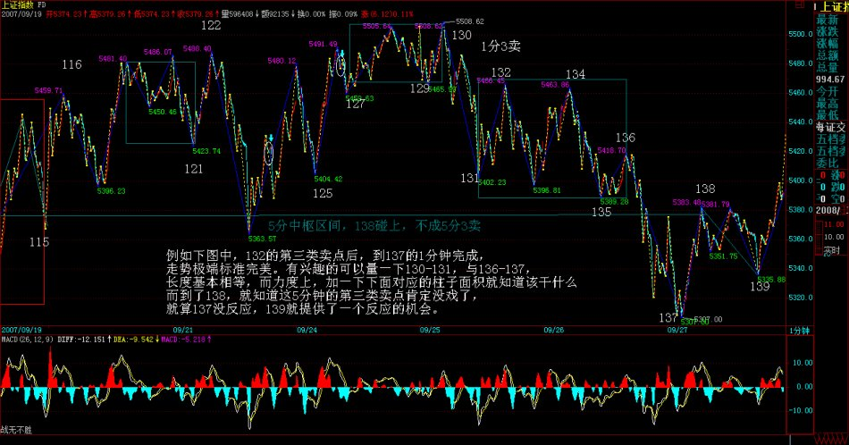
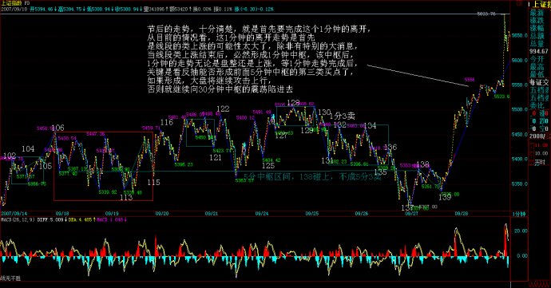
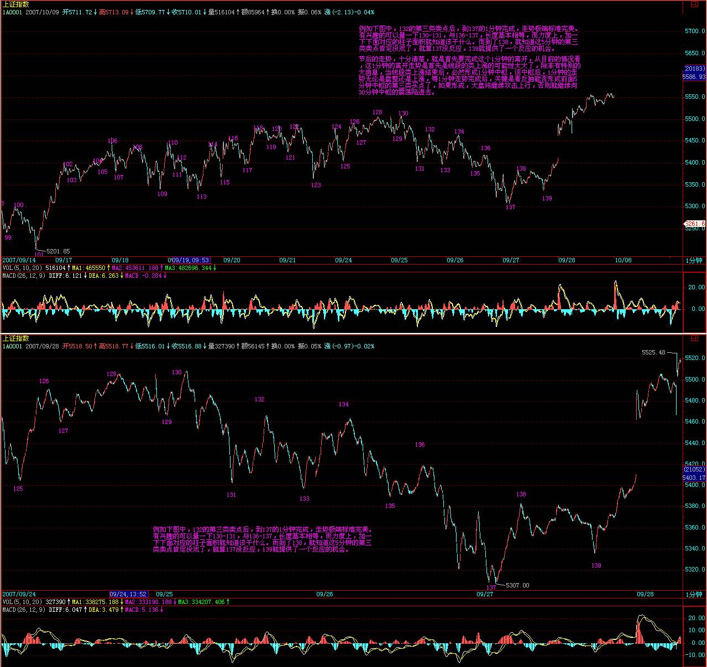
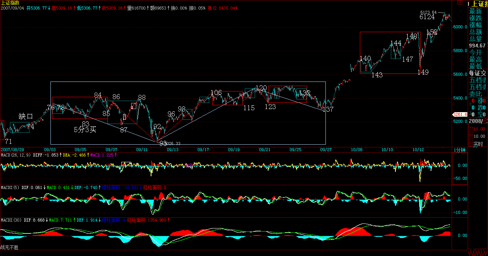
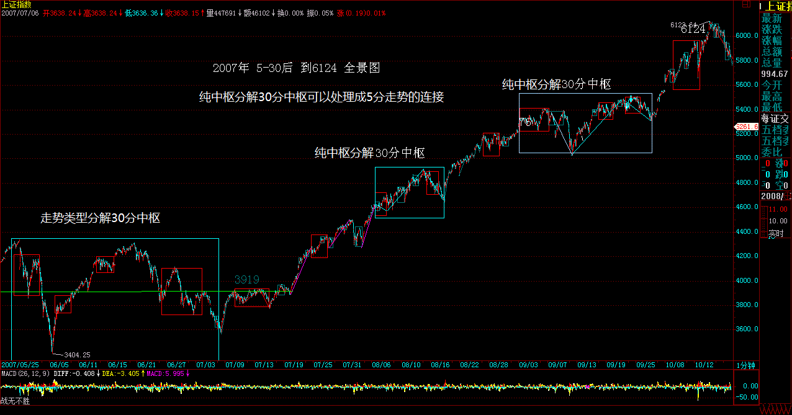

教你炒股票83：笔-线段与线段-最小中枢结构的不同心理意义1
(2007-09-26 )
一个最简单的问题，为什么不能由笔构成最小中枢？其实，这不是一个问题。为什么？因为实质上，我们是可以设计这样的程序，也就是用笔当成构成最小中枢的零件，但这样构造出来的系统，其稳定性极差。
众所周知，一笔的基础是顶和底分型，而一些瞬间的交易，就足以影响其结构。例如，突然有人打错单，或者有人给老鼠仓送货，那么全天走势的分析就大变样了。而由线段构成最小中枢，则不存在这个问题。为什么？一个线段的改变，不会因为一个偶尔一笔的错误而改变，也就是说，线段受偶尔性的影响比较少，想想要破坏一个线段的麻烦程度，就知道这一点。
从心理上看，偶尔因素是允许发生的，只要不被再次确认，就证明偶尔因素对原来的心理合力没有大影响，反过来确认了该合力的有效性。所以，线段破坏本身，其实就反应着一种微妙的心理结构的变化。特征序列分型的引入，本质上就是去勾勒这种心理结构的变化的。就像一般的分型，三次的确认才能构成，特征序列的分型，本质上也是一样的，这样的确认，其有效性就极大增加了。由此构成最小中枢的零件，才是合适的。
如果说三个K线的折腾就可以决定一笔的转折，那么一个线段的破坏转折，就需要三个特征序列分型的折腾，这样，市场买卖双方都有足够的时间去反应，从而使得体现出的合力痕迹，当然具有了一定的延续性。而一个线段，至少由三笔组成，这也使得转折后的新线段，同样可以让合力得到充分体现，而对比这两个不同方向的线段，买卖双方在相应时间内的心理、实力对比，就一目了然了。
更重要的是，线段破坏的两种方式，是有着很大的心理面不同的。第一种方式，第一笔攻击就直接攻破上一段的最后一次打击，证明这反攻的力量是有力的，再回来一笔，代表着原方向力量的再次打击，但反攻力量抗住并再次反攻形成特征序列的分型，这证明，这反攻至少构造了一个停歇的机会。最坏的情况，就是双方都稍微冷静一下，去选择再次的方向。而这，就恰好构成了最小中枢形成的心理基础。
中枢，其实就是买卖双方反复较量的过程，中枢越简单，证明其中一方的力量越强大。中枢的复杂程度，是考察市场最终动向的一个很重要的依据。一个超复杂的中枢过后，就算一方赢了，其后的走势也是经常反复不断的。(注：非绝对）
而且，在同一趋势中，相邻两中枢的复杂程度、形态，经常有所区别。为什么？人都有提前量，而提前量，经常就是找最近的模本去抄袭，这样，等于在买卖的合力中，都加了一个提前的变量，从而造成整个结构的变化。这是一个很重要的原理，所谓不会二次跨进同一条河流，这本质上由人的贪嗔痴疑慢造成的。
至于线段的第二种破坏方式，本质上是以时间换空间，反攻开始的力量很弱，需要慢慢积累，这一方面代表原方向的力量很强，另一方面，又要密切关注是否会形成骨牌效应，也就是开始的反攻力量很小，却能迅速蔓延开，这往往证明，市场原方向的分力，其结构具有趋同性，一旦有点风吹草动，就集体转向。这在投机性品种经常能看到，经常是一个小M头就引发大跳水。趋同性，如果对于一般性品种来说，往往意味着庄家控盘程度高。
一些猛烈上涨或下跌的股票，往往甚至由于一个1分钟的小顶分型就引发大跳水或大反弹，其原因，就是这种分力的趋同性所引发的骨牌效应。一般来说，这种第二类的线段破坏，一旦出现骨牌效应，至少要回到前一高、低点范围内，这就是市场上冲顶和赶底时发生的V字型走势。
分力的趋同性所引发的骨牌效应，基本上就是表现为所谓的多杀多、空杀空。特别在一些大的趋势之后，市场的力量一边倒，如果这时候突然来一个加速，一旦逆转，就会发生典型的多杀多、空杀空现象。
叛徒成为叛徒之前，必然是同志，甚至就是同志中的牛人。而最危险的敌人，总是志同道合的所谓同志的背叛，同一阵营内部的塌陷才是最有杀伤力的。无论多头空头，死的时候，沿着那滴血的刀看上去，那双眼睛，一定是你最熟悉的。
新蓝筹成多方利器，市场调控彻底失败。
(2007-09-27 15:31:37)
今天的走势，出于对明天大量放出资金的憧憬，走出了应有的回升行情。技术上，昨天特别强调的1分钟结束后的回拉，并没有出现第三类卖点，短线依然继续保持中枢震荡。从中线图上看，大盘目前对于多方最大的危险，就是圆顶，因此，多方如果不希望进入温水煮青蛙的境地，就必须至少在节后迅速突破站稳5500点，否则，这圆顶成立的可能性将极大增加。
从资金与政策的对赌看，资金面取得了决定性的胜利，今天，建行成为多头利器，宣布，以增加所谓蓝筹进行调控的思路彻底失败。目前资金的宣言就是：你来多少，就提供多少拉抬的武器，只要你还是市场调控，有钱就敢顶风搞。
本ID在前面已经明确说过，这资金和政策的对赌，最终的结局，一定是政策举起大棒，而资金这种行为，也无可厚非，资金就是这样的，连权证的末日轮都可以搞得热火朝天，这样的形势下，资金又有什么不可赌的？
中字头、题材股，两只蝴蝶忽悠着飞，能飞多远是多远，管他明天是仙还是灰。
明天最后一天，就看解冻的资金能忽悠进来多少了，这个越来越向30分钟靠的震荡什么时候结束，看图就知道，第三买卖点。
希望这个游戏能延长的时间越长越好，钱是靠折腾出来的，要折腾，哪会没风险？只要看好你附近的刀和那一直在头上的大棒。
今天很忙，下午去看一公司，晚上还有一个会，晚上的帖子可能很晚，明天早上看也一样的，别影响休息。
先下，再见。
资金乘胜追击，破圆顶兵临3/4线
(2007-09-28 15:51:59)
昨天已经明确说了，资金取得决定性胜利，而资金最大的技术危险是圆顶，最迟在节后必须破掉。而今天关于房地产的利空，反而成了股市资金面的大利好，资金这时不发力，那是脑子有水了。因此就上演了一场乘胜追击，破圆顶兵临3/4线的好戏。
注意，本ID已经说过了，在刀锋上舞蹈阶段，是多空皆杀，那些一根筋思维的人，注定要被杀，目前不被杀只是迟早的问题，某种模式反复后，就是相信这种模式的人的死期。
本ID什么都不相信，市场让本ID看到什么就干什么，这就是本ID理论的唯一中心与基本点。例如下图中，132的第三类卖点后，到137的1分钟完成，走势极端标准完美。有兴趣的可以量一下130-131，与136-137，长度基本相等，而力度上，加一下下面对应的柱子面积就知道该干什么。而到了138，就知道这5分钟的第三类卖点肯定没戏了，就算137没反应，139就提供了一个反应的机会。

当然，站在中枢震荡的角度，并不需要预测后面能走多高，让市场告诉你。而今天的走势，强悍到连一个线段都没破坏过，那该干什么还不是很清楚的事情？
节后的走势，十分清楚，就是首先要完成这个1分钟的离开，从目前的情况看，这1分钟的离开走势是首先是线段的类上涨的可能性太大了，除非有特别的大消息，当线段类上涨结束后，必然形成1分钟中枢，该中枢后，1分钟的走势无论是盘整还是上涨，等1分钟走势完成后，关键是看反抽能否形成前面5分钟中枢的第三类买点了，如果形成，大盘将继续攻击上行，否则就继续向30分钟中枢的震荡陷进去。

好了，上面的分析已经十分明确，对本ID理论有点了解的，都应该明白了。至于不了解的，本ID已经反复说过，中线点的就看5周线，你看，昨天的低点，就刚好在上面，和上次5000点那次一样。

基本面上，很明确地告诉各位，节后最可能出来的消息，就是关于国有股部分划转社保的问题。关于这个消息，本ID和周围的人都有点分歧，这消息意味着，以后卖国有股，就不需要什么通知了，想什么时候卖都可以。但，目前资金充沛，完全有可能出现如此尴尬的事情，就是见一只买一只，全给买光了。毕竟那些国有股都是中字头的，都是中国最好的企业。所以，对这政策的杀伤力，本ID依然表示怀疑。不过，最终要看市场的反应，本ID自己不会有什么太多想法，只关心市场合力本身。
要打跨资金，政策上可能有效的招数有：一、查基金黑幕；二、规定A股流通量不到10%的必须到10%。三、XXXX。
政策必胜，这是无疑的。但本ID对资金与政策都没兴趣，本ID唯一感兴趣的，就是利用他们两者斗法所制造的市场机会去多空皆杀。
个股方面，没什么可说的，中字头、题材股，两只蝴蝶继续忽悠着飞。只要掌握好节奏，就是操作的天堂。如果不明白什么叫节奏，请各位做一作业：从日分型到小的级别走势，好好分析一下000938，里面全部都是教科书。
放假了，让股票豆腐去吧。
本ID今晚再写一帖子，明天就要外出腐败腐败了，博客关闭到10月7日。10月8日重新开张。
祝各位过节好。
先下，再见。

缠中说禅
石猴：2007-10-02 20:33:12
K线图级别：是指通过不同的Ｋ线图走势来按照上面的分析方法进行分析，比如用日Ｋ线图进行分析，其中一样可以形成分型、笔、线段，进而形成中枢，走势，继续形成高级别的中枢等。这个Ｋ线图是可以取多种不同的级别，如：１分钟、5分钟、３０分钟、日线、周线等等
===========
走势级别你理解的对，但这个不对，k图级别不需要用递推的方法，首先这是大级别图，至少是15f，或者30f的图，第二，用什么级别的k图就直接在这个图上找出买卖点。比如你现在用30f的图，发现有向下的下上下三段，上没过第一个下的高点，第二个下和第一下明显背驰，你就要密切关注了，非常可能是第一买点，然后你再从小级别的图，比如1f，或者5f图来用递归的那套方法分析走势，确定这两个下是否是背驰了，这样判断买点的成功率就高了。


|